Les machines à vecteurs de support (SVM), introduites par Vapnik dans les années 1990, sont des méthodes de classification supervisée largement utilisées. Leur principe repose sur la recherche d’un hyperplan séparateur maximisant la marge entre deux classes.
Lorsque les données ne sont pas linéairement séparables, on peut utiliser le kernel trick, qui permet de projeter implicitement les données dans un espace de dimension supérieure grâce à des noyaux tels que le linéaire, le polynomial ou le gaussien RBF.
Un paramètre clé, noté C, contrôle le compromis entre la largeur de la marge et les erreurs de classification.
L’objectif de ce TP est de mettre en pratique ces concepts à l’aide de la bibliothèque scikit-learn, sur des jeux de données simulés et réels.
Mise en œuvre
1. Jeu de données jouet (deux gaussiennes)
# Chargement des bibliothèquesimport numpy as np # pour la manipulation de tableaux et la génération des donnéesimport matplotlib.pyplot as plt # pour les visualisationsfrom sklearn.svm import SVC # le classifieur SVM et scikit-learn# Importations supplémentaires from sklearn import svmfrom sklearn import datasetsfrom sklearn.utils import shufflefrom sklearn.preprocessing import StandardScalerfrom sklearn.model_selection import train_test_split, GridSearchCVfrom sklearn.datasets import fetch_lfw_peoplefrom sklearn.decomposition import PCAfrom sklearn.metrics import confusion_matrix, ConfusionMatrixDisplayfrom sklearn.metrics import classification_reportfrom time import timeimport sysimport osscript_dir = os.path.join(os.getcwd(), 'script_python')sys.path.append(script_dir)from svm_source import*# importe toutes les fonctions définies dans un fichier externe svm_source.py# Préparation de l'environnementscaler = StandardScaler()# Initialise un standardisateurimport warningswarnings.filterwarnings("ignore")# Supprime les avertissementsplt.style.use('ggplot')# Génération de données simulées – Créer deux classes de données gaussiennes# Nombre d'échantillons par classen1 =200n2 =200# Moyennes des distributions mu1 = [1., 1.]mu2 = [-1./2, -1./2]# Écarts-typessigma1 = [0.9, 0.9]sigma2 = [0.9, 0.9]# Fixe la graine pour la reproductibiliténp.random.seed(42)# Génère les donnéesX1, y1 = rand_bi_gauss(n1, n2, mu1, mu2, sigma1, sigma2)# Visualisations des donnéesplt.show()plt.close("all")plt.ion()plt.figure(1, figsize=(15, 5))plt.title('Premier ensemble de données')plot_2d(X1, y1)# Séparation des données et conversion explicite des labels en entiersX_train = X1[::2]Y_train = y1[::2].astype(int)X_test = X1[1::2]Y_test = y1[1::2].astype(int)# Entraînement du modèle SV# ajuste le modèle avec un noyau linéaireclf = SVC(kernel='linear')clf.fit(X_train, Y_train)# Prédire les étiquettes pour la base de données de testy_pred = clf.predict(X_test)# Vérifier le score obtenuscore = clf.score(X_test, Y_test)print('Score : %s'% score)
Score : 0.905
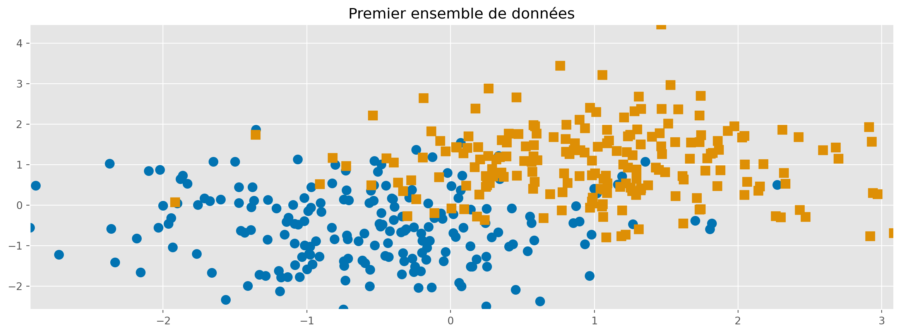
Le modèle SVM avec noyau linéaire atteint un score de \(0.905\) sur l’échantillon test.
Le graphique illustre le jeu de données constitué de deux classes bien séparées. On observe une frontière de décision qui distingue correctement la majorité des points : les deux groupes sont clairement identifiables, ce qui confirme la bonne capacité de généralisation du classifieur.
# Afficher la frontière de décision du SVM entrainédef f(xx):"""Classificateur : nécessaire pour éviter les avertissements dus à des problèmes de forme"""return clf.predict(xx.reshape(1, -1))# Créer une nouvelle figure plt.figure()frontiere(f, X_train, Y_train, w=None, step=50, alpha_choice=1)plt.title("Figure 1")# Même procédure mais avec une recherche par grilleparameters = {'kernel': ['linear'], 'C': list(np.linspace(0.001, 3, 21))}clf2 = SVC()clf_grid = GridSearchCV(clf2, parameters, n_jobs=-1)clf_grid.fit(X_train, Y_train)# Vérifiez le score obtenuprint(clf_grid.best_params_)print('Score : %s'% clf_grid.score(X_test, Y_test))def f_grid(xx):"""Classificateur : nécessaire pour éviter les avertissements dus à des problèmes de forme"""return clf_grid.predict(xx.reshape(1, -1))# Afficher la nouvelle frontière de décision du modèle optimiséplt.figure()frontiere(f_grid, X_train, Y_train, w=None, step=50, alpha_choice=1)plt.title("Figure 2")
Après optimisation du paramètre C optimal via GridSearch, la performance reste stable avec un score de \(0.9\).
Cette étape illustre le rôle de l’optimisation d’hyperparamètres, même si, sur un jeu simple, l’impact est limité.
Les deux figures illustrent la frontière de décision d’un SVM linéaire appliqué au jeu de données. La figure 1 représente un modèle entraîné sans optimisation, qui sépare correctement les deux classes. Et la figure 2 quant à elle représente un modèle optimisé par validation croisée sur le paramètre C. Dans les deux cas, les zones colorées représentent les prédictions du classifieur, et la séparation diagonale traduit la capacité du modèle à distinguer efficacement les deux classes.
2. Jeu de données iris
Question 1 : noyau linéaire
# Chargement et préparation des données Iris iris = datasets.load_iris()X = iris.data # Contient les 4 caractéristiquesX = scaler.fit_transform(X) # Standardise les données (centrées réduites)y = iris.target # Contient les étiquettes de classes# Filtrage des classes et réduction dimensionnelleX = X[y !=0, :2] # Supprime la classe 0 (Setosa) pour n'en garder que 2y = y[y !=0]# Test de train fractionné 75 % entrainement et 25 % pour le testX, y = shuffle(X, y)X_train, X_test, y_train, y_test = train_test_split(X, y, test_size=0.25, random_state=42)################################################################################ Ajuster le modèle avec un noyau linéaire ou polynomial################################################################################ Recherche du meilleur hyperparamètre C pour un noyau linéaire parameters = {'kernel': ['linear'], 'C': list(np.logspace(-3, 3, 200))}clf_linear = GridSearchCV(SVC(), parameters, cv=5)clf_linear.fit(X_train, y_train)# Évaluation du modèle avec le calcul du scoreprint('Score de généralisation pour le noyau linéaire : %s, %s'% (clf_linear.score(X_train, y_train), clf_linear.score(X_test, y_test)))# Visualisation des données et de la frontière de décisionplt.figure(figsize=(15, 5))plot_2d(X, y)plt.title("Ensemble de données sur l'iris")plt.show()# Fonction utilitaire pour prédire un pointdef f_linear(xx):return clf_linear.predict(xx.reshape(1, -1))# Affichage de la frontière de décision du modèle optimiséfrontiere(f_linear, X, y)plt.title("Noyau linéaire")plt.tight_layout()plt.draw()
Score de généralisation pour le noyau linéaire : 0.7066666666666667, 0.68
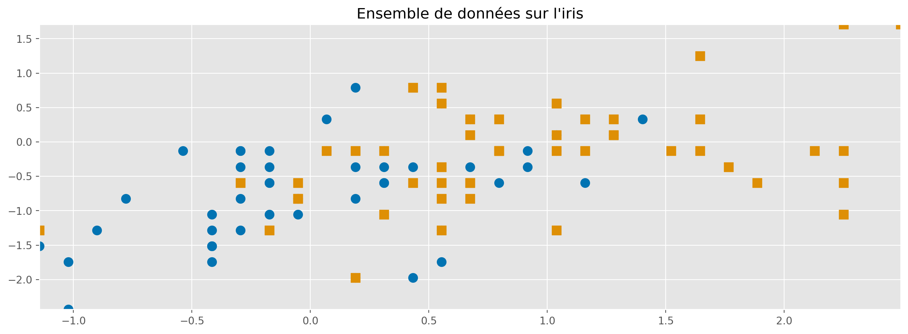
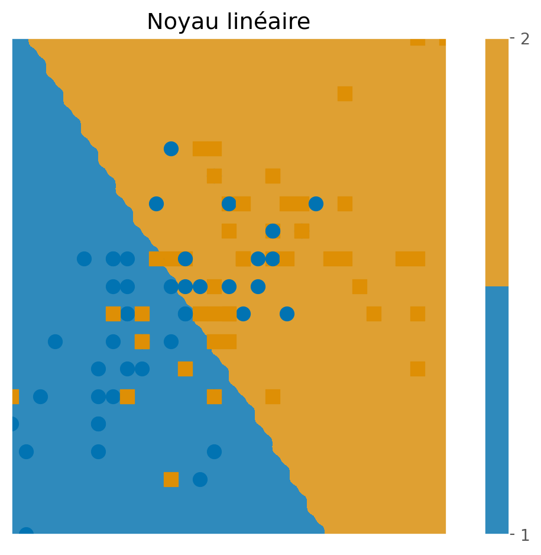
Avec le jeu de données “iris” (classes 1 et 2, deux premières variables), l’utilisation d’un SVM à noyau linéaire donne une performance d’environ \(0.68\) sur l’échantillon test. Après optimisation du paramètre de régularisation C via une recherche sur grille (GridSearchCV), le score de généralisation s’élève à environ \(0.71\).
Le premier graphique représente les données du jeu Iris. Les points sont codés par couleur et forme selon leur classe, révélant un chevauchement partiel entre les deux groupes. Le second graphique illustre la frontière de décision d’un SVM linéaire optimisé. Les zones colorées indiquent les prédictions du modèle, et la séparation diagonale montre la capacité du classifieur à distinguer les deux classes dans cet espace réduit.
Question 2 : noyau polynomial
# Définition des hyperparamètres pour le noyau polynomialCs =list(np.logspace(-3, 3, 5))gammas =10.** np.arange(1, 2)degrees = np.r_[1, 2, 3]# Recherche du meilleur ensemble d'hyperparamètresparameters = {'kernel': ['poly'], 'C': Cs, 'gamma': gammas, 'degree': degrees}clf_poly = GridSearchCV(SVC(), parameters, cv=5)clf_poly.fit(X_train, y_train)# Évaluation du modèle avec le calcul du scoreprint(clf_poly.best_params_)print('Score de généralisation pour le noyau polynomial: %s, %s'% (clf_poly.score(X_train, y_train), clf_poly.score(X_test, y_test)))# Fonction utilitaire pour prédire un point avec le modèle polynomialdef f_poly(xx):return clf_poly.predict(xx.reshape(1, -1))# Visualisation de la frontière de décisionfrontiere(f_poly, X, y)plt.title("Noyau polynomial")plt.tight_layout()plt.draw()
{'C': np.float64(1.0), 'degree': np.int64(1), 'gamma': np.float64(10.0), 'kernel': 'poly'}
Score de généralisation pour le noyau polynomial: 0.72, 0.76
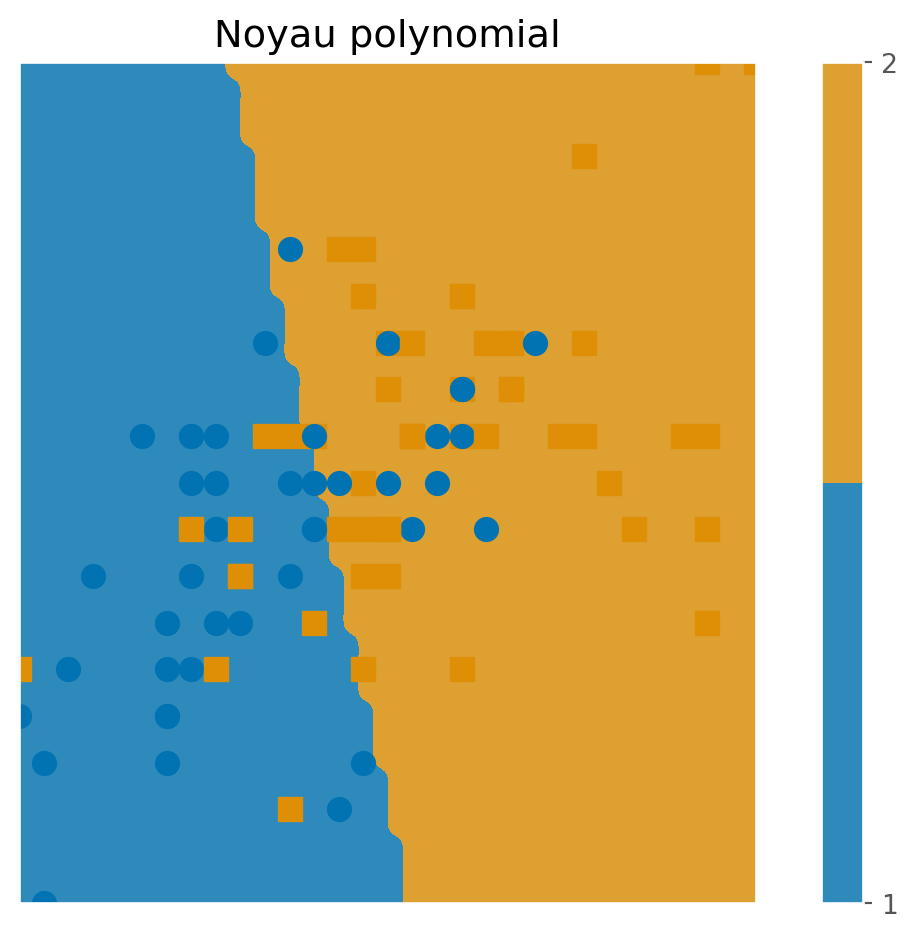
En utilisant un SVM à noyau polynomial et en ajustant le paramètre de régularisation C, les performances atteignent environ \(0,72\) sans optimisation, et \(0,76\) après recherche de l’hyperparamètre optimal.
Le graphique ci-dessus illustre la frontière de décision non linéaire obtenue avec ce noyau, mieux adaptée à la complexité du jeu de données Iris. Contrairement au noyau linéaire, qui produit une séparation rectiligne, le noyau polynomial permet de capturer plus finement les zones de chevauchement entre les classes, améliorant ainsi la capacité de discrimination dans un espace réduit.
La comparaison montre que le noyau polynomial offre une meilleure généralisation, grâce à sa flexibilité.
3. Classification de visages
Pour notre analyse, nous avons utilisé un extrait prétraité du jeu de données “Labeled Faces in the Wild” (LFW), qui contient des images de visages de célébrités. Nous avons sélectionné uniquement deux individus (Donald Rumsfeld et Colin Powell) afin de réaliser une classification binaire.
Pour améliorer la compatibilité et la clarté, nous avons apporté une petite modification à la ligne de code originale se trouvant dans svm_script.py :
La ligne
y = np.r_[np.zeros(np.sum(idx0)), np.ones(np.sum(idx1))].astype(np.int)
a été remplacée par
y = np.r_[np.zeros(np.sum(idx0)), np.ones(np.sum(idx1))].astype(int)
Voici la version finale du code qui a été employée pour charger l’ensemble des données :
# Chargement du jeu de données LFWlfw_people = fetch_lfw_people(min_faces_per_person=70, resize=0.4, color=True, funneled=False, slice_=None, download_if_missing=True)# Extraction des images et dimensionsimages = lfw_people.imagesn_samples, h, w, n_colors = images.shape# L'étiquette à prédire est l'identifiant de la personnetarget_names = lfw_people.target_names.tolist()# Nous avons choisi ici une paire à classer : 'Donald Rumsfeld' et 'Colin Powell'names = ['Donald Rumsfeld', 'Colin Powell']# Filtrage des images pour les deux classesidx0 = (lfw_people.target == target_names.index(names[0]))idx1 = (lfw_people.target == target_names.index(names[1]))images = np.r_[images[idx0], images[idx1]]n_samples = images.shape[0]y = np.r_[np.zeros(np.sum(idx0)), np.ones(np.sum(idx1))].astype(int)# Visualisation d'un échantillon de donnéesplot_gallery(images, np.arange(12))plt.show()# Extraire des caractéristiquesX = (np.mean(images, axis=3)).reshape(n_samples, -1)# Centrage et réduction des caractéristiques pour normaliser les donnéesX -= np.mean(X, axis=0)X /= np.std(X, axis=0)# Séparation en train/testindices = np.random.permutation(X.shape[0])train_idx, test_idx = indices[:X.shape[0] //2], indices[X.shape[0] //2:]X_train, X_test = X[train_idx, :], X[test_idx, :]y_train, y_test = y[train_idx], y[test_idx]images_train, images_test = images[ train_idx, :, :, :], images[test_idx, :, :, :]
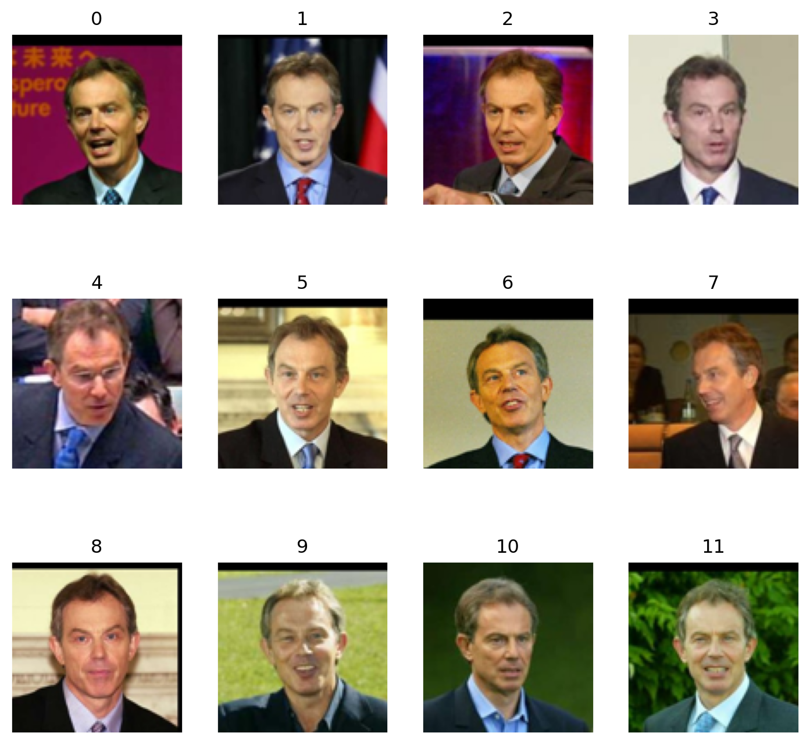
Après avoir chargé et préparé l’ensemble de données, chaque image reçoit une étiquette correspondant à son individu : 0 pour Donald Rumsfeld et 1 pour Colin Powell.
Pour illustrer la diversité des visages et la qualité des images utilisées, un échantillon de \(12\) images est affiché. Les caractéristiques extraites pour chaque image correspondent à la moyenne des intensités lumineuses des pixels sur les trois canaux de couleur, ce qui permet de réduire la complexité des données tout en conservant les informations essentielles pour la classification.
Afin de faciliter l’apprentissage du classificateur, ces caractéristiques sont centrées et réduites, garantissant que chaque variable a une moyenne nulle et un écart-type égal à un. Enfin, l’ensemble de données est divisé de manière aléatoire en deux parties : un jeu d’entraînement et un jeu de test, contenant chacun environ la moitié des observations. Cette séparation permet d’évaluer de manière fiable les performances du modèle sur des images jamais vues pendant l’entraînement.
Question 4 : influence du paramètre de régularisation C
Pour étudier l’influence du paramètre de régularisation C, nous avons utilisé un classificateur SVM à noyau linéaire. Ce paramètre contrôle l’équilibre entre la maximisation de la marge et la pénalisation des erreurs de classification.
Nous avons testé plusieurs valeurs de C réparties logarithmiquement entre \(10^{-5}\) et \(10^{5}\).
# Affiche un titre pour indiquer que l'on travaille avec un noyau linéaire print("--- Linear kernel ---")print("Fitting the classifier to the training set")# Lance un chronomètre pour mesurer le temps d'exécutiont0 = time()# Exploration du paramètre CCs =10.** np.arange(-5, 6)scores = []for C in Cs: clf = SVC(kernel="linear", C=C) clf.fit(X_train, y_train) scores.append(clf.score(X_test, y_test))# Sélection du meilleur Cind = np.argmax(scores)print("Best C: {}".format(Cs[ind]))# Visualisation des meilleures performances plt.figure()plt.plot(Cs, scores)plt.xlabel("Paramètres de régularisation C")plt.ylabel("Scores d'apprentissage")plt.xscale("log")plt.tight_layout()plt.show()print("Best score: {}".format(np.max(scores)))# Préparation à la prédictionprint("Predicting the people names on the testing set")t0 = time()
--- Linear kernel ---
Fitting the classifier to the training set
Best C: 0.001
Best score: 0.8770949720670391
Predicting the people names on the testing set
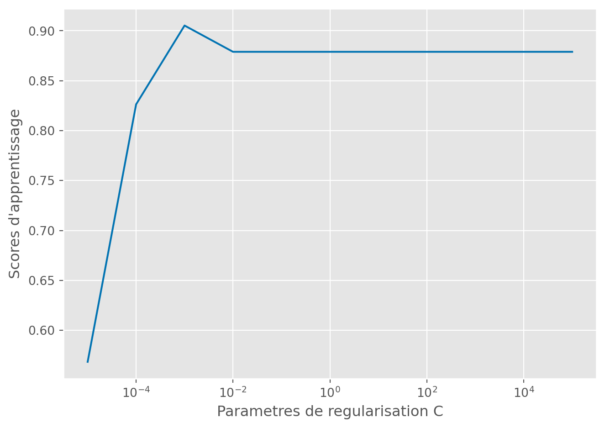
L’étude de la performance en fonction de C montre qu’il existe une valeur optimale qui maximise le score de test. D’après le graphique, on peut remarquer que pour des valeurs de C trop faibles, le modèle est trop contraint et ne capture pas correctement les différences entre les classes. À l’inverse, pour des valeurs très élevées, le modèle devient trop sensible aux données d’entraînement.
Afin de mieux analyser le comportement du modèle, nous avons représenté l’évolution de l’erreur de prédiction (plutôt que du score). La meilleure valeur de C est indiquée par un point rouge sur le graphique.
# Calcul de l'erreur de prédiction pour différentes valeurs de Cerrors = []for C in Cs: clf = SVC(kernel="linear", C=C) clf.fit(X_train, y_train) errors.append(1- clf.score(X_test, y_test))# Sélection du meilleur C (minimisant l'erreur)best_ind = np.argmin(errors)best_C = Cs[best_ind]best_error = errors[best_ind]plt.figure()plt.plot(Cs, errors, marker="o")# Visualisation de l'erreur en fonction de Cplt.scatter(best_C, best_error, color="red", s=100, zorder=5)plt.xscale("log")plt.xlabel("Paramètre de régularisation C")plt.ylabel("Erreur de prédiction")plt.title("Influence de C sur la performance")plt.grid(True)plt.tight_layout()plt.show()# Affichage des résultatsprint("Best C: {}".format(Cs[best_ind]))print("Best error: {}".format(np.min(errors)))print("Best accuracy(score): {}".format(1- np.min(errors)))t0 = time()
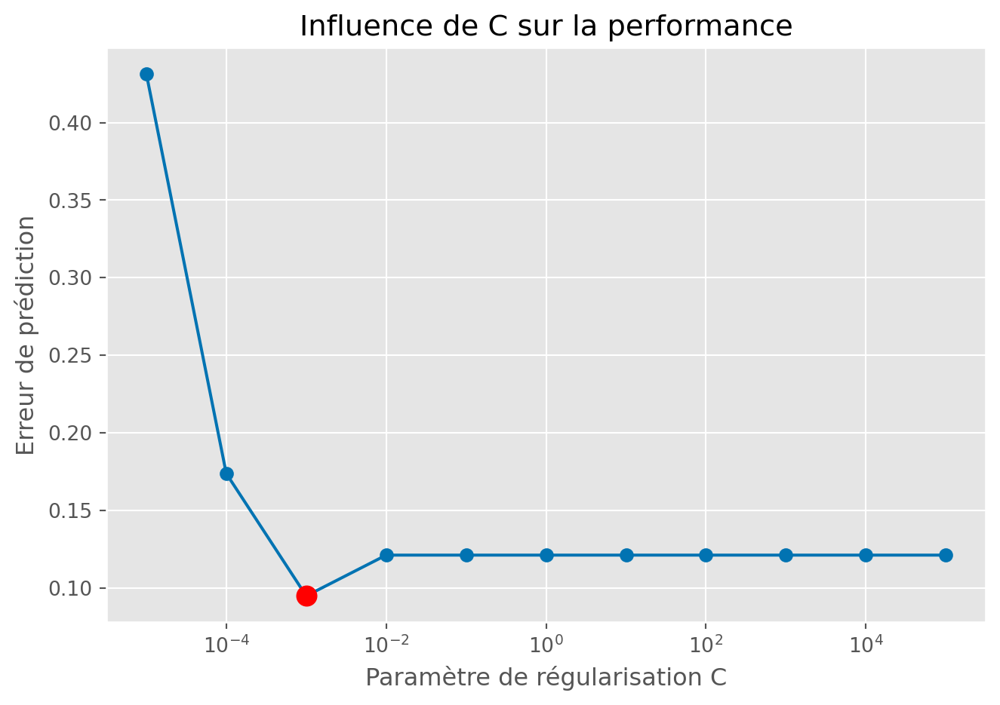
Best C: 0.001
Best error: 0.12290502793296088
Best accuracy(score): 0.8770949720670391
Ces deux représentations sont complémentaires et mettent en évidence que :
pour des C trop petits (\(10^{-5}\)), le modèle sous-apprend (underfitting),
pour des C trop grands (\(10^{5}\)), il tend au surapprentissage (overfitting).
Pour approfondir l’analyse, nous avons construit les matrices de confusion pour les deux cas extrêmes : \(C=1e^{-5}\) et \(C=1e^{5}\).
La matrice de confusion permet de visualiser la performance du classificateur de manière détaillée. Chaque ligne correspond aux classes réelles, et chaque colonne aux classes prédites. Elle montre ainsi non seulement le taux global de bonne classification, mais aussi quelles classes sont confondues par le modèle.
# Matrice de confusion# Cas 1 : SVM avec une régularisation très forte (C petit)clf_small = SVC(kernel="linear", C=1e-5)clf_small.fit(X_train, y_train)y_pred_small = clf_small.predict(X_test)cm_small = confusion_matrix(y_test, y_pred_small, labels=clf_small.classes_)disp_small = ConfusionMatrixDisplay(confusion_matrix=cm_small, display_labels=clf_small.classes_)# Cas 2 : SVM avec une régularisation très faible (C grand)clf_large = SVC(kernel="linear", C=1e5)clf_large.fit(X_train, y_train)y_pred_large = clf_large.predict(X_test)cm_large = confusion_matrix(y_test, y_pred_large, labels=clf_large.classes_)disp_large = ConfusionMatrixDisplay(confusion_matrix=cm_large, display_labels=clf_large.classes_)# Visualisation côte à côte des deux matricesfig, axes = plt.subplots(1, 2, figsize=(12, 5))# 0 = Donald Rumsfeld, 1 = Colin Powellclass_names = ['Donald Rumsfeld', 'Colin Powell']disp_small = ConfusionMatrixDisplay(confusion_matrix=cm_small, display_labels=class_names)disp_small.plot(ax=axes[0], cmap="Blues", xticks_rotation='vertical', colorbar=False)axes[0].set_title("Confusion matrix (C=1e-5)")disp_large = ConfusionMatrixDisplay(confusion_matrix=cm_large, display_labels=class_names)disp_large.plot(ax=axes[1], cmap="Blues", xticks_rotation='vertical', colorbar=False)axes[1].set_title("Confusion matrix (C=1e5)")plt.tight_layout()plt.show()
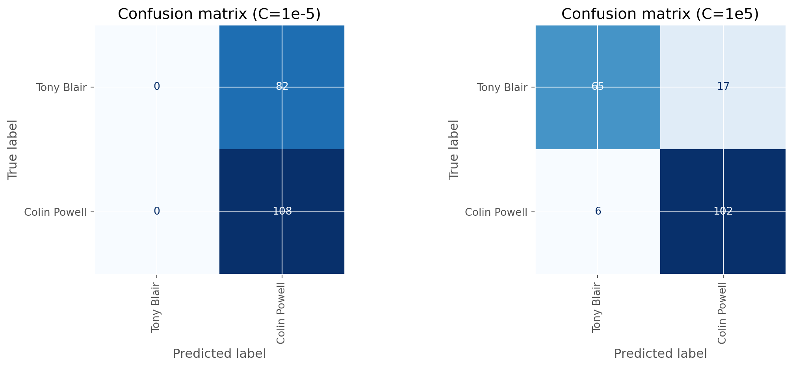
L’observation confirme les tendances générales :
avec \(C=10^{-5}\), le modèle prédit uniquement Colin Powell et ignore totalement Donald Rumsfeld,
avec \(C=10^{5}\), les deux classes sont mieux distinguées, mais quelques erreurs persistent.
Nous fournirons les mêmes résultats, mais sous forme numérique :
pour \(C = 10^{-5}\), la précision et le rappel pour Donald Rumsfeld sont nuls, ce qui signifie que le modèle est totalement incapable de reconnaître cette classe,
pour \(C = 10^{5}\), la performance s’améliore nettement avec une précision globale de \(88 \%\), bien que quelques erreurs subsistent pour les deux individus.
Il est important de noter que l’accuracy de \(70\%\)$ pour \(C = 10^{-5}\) ne reflète pas la véritable performance du modèle. Ce résultat est dû au déséquilibre des classes : comme il y a davantage d’images de Colin Powell, le classificateur prédit systématiquement cette classe, atteignant ainsi artificiellement \(70\%\) de bonnes réponses. Cette mesure ne traduit donc pas la capacité réelle de reconnaissance, mais uniquement un biais lié à la distribution des données.
Pour évaluer correctement la performance du modèle, il est nécessaire d’utiliser des métriques telles que la précision (precision), le rappel (recall) et le f1-score. Pour \(C = 10^{5}\), ces métriques s’améliorent pour les deux classes (Donald Rumsfeld : precision \(= 0.82\), recall \(= 0.76\) ; Colin Powell : precision \(= 0.90\), recall \(= 0.93\)), indiquant une amélioration réelle de la qualité des prédictions.
Nous comparons la précision du modèle avec le niveau de hasard (baseline), afin d’évaluer dans quelle mesure le choix de C améliore réellement les performances.
# Prédiction avec le meilleur modèleclf = SVC(kernel="linear", C=Cs[ind])clf.fit(X_train, y_train)y_pred = clf.predict(X_test)# Mesure de temps d'exécutionprint("done in %0.3fs"% (time() - t0))# Calcul du niveau de hasardprint("Chance level : %s"%max(np.mean(y), 1.- np.mean(y)))# Evaluation de la précisionprint("Accuracy : %s"% clf.score(X_test, y_test))
done in 1.050s
Chance level : 0.6610644257703081
Accuracy : 0.8770949720670391
Les résultats montrent que l’entraînement du modèle prend environ \(1\) seconde. Le niveau de hasard est supérieur à \(60\%\), c’est-à-dire la précision obtenue si l’on prédit toujours la classe majoritaire. La précision réelle du modèle sur les données de test est supérieure à \(85\%\), ce qui confirme l’efficacité du choix de C.
Enfin, nous avons comparé les prédictions et les coefficients appris par le classificateur pour trois cas : le meilleur C, une valeur très faible (\(C=10^{-5}\)) et une valeur très grande (\(C=10^{5}\)).
# Evaluation qualitative des prédictionsprediction_titles = [title(y_pred[i], y_test[i], names)for i inrange(y_pred.shape[0])]# Affiche galerie d'images test avec les titres générésplot_gallery(images_test, prediction_titles)plt.show()# Visualisation des coefficients du modèle SVMplt.figure()plt.imshow(np.reshape(clf.coef_, (h, w)))plt.show()# Extraction des coefficients des deux modèles (C=1e-5 et C=1e5)coef_small = clf_small.coef_.ravel()coef_large = clf_large.coef_.ravel()# Visualisation côte à côte des cartes de poidsfig, axes = plt.subplots(1, 2, figsize=(10, 5))axes[0].imshow(coef_small.reshape(h, w), cmap=plt.cm.seismic, interpolation="nearest")axes[0].set_title("Coefficients (C=1e-5)")axes[1].imshow(coef_large.reshape(h, w), cmap=plt.cm.seismic, interpolation="nearest")axes[1].set_title("Coefficients (C=1e5)")plt.tight_layout()plt.show()
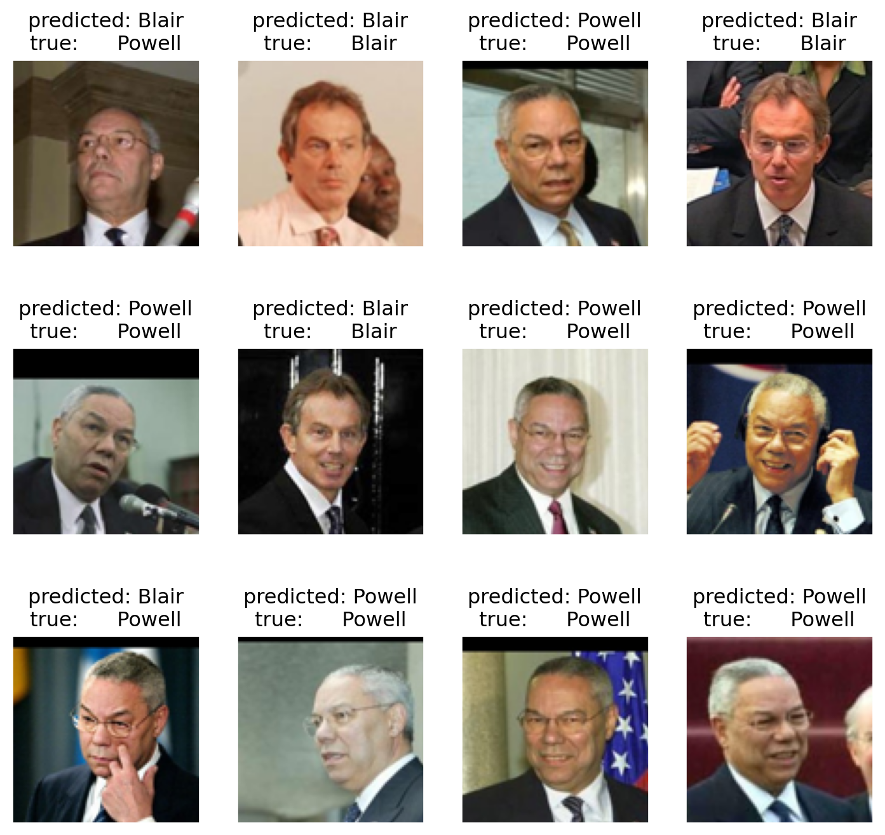
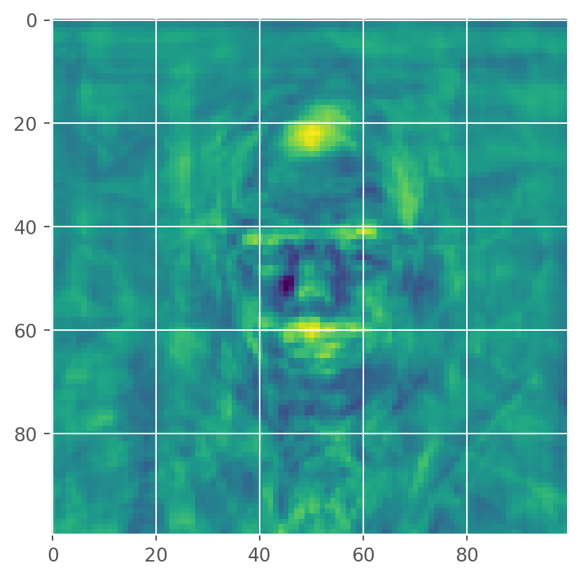
Ces visualisations mettent en évidence plusieurs points.
Pour \(C = 10^{-5}\), l’image du coefficient est plus floue et les points rouges (importants) et bleus (sans importance) de l’image sont plus grands, donc plus généraux. Le modèle privilégie d’abord les caractéristiques les plus importantes, telles que la taille du front, la ligne des cheveux, la forme du nez et des lèvres, le cou et l’arrière-plan, ce dernier pouvant être récurrent dans l’échantillon.
Pour \(C = 10^{5}\), le modèle devient beaucoup plus sensible et fragmente toutes les parties de l’image, les points rouges et bleus apparaissant beaucoup plus petits.
Cette comparaison illustre clairement la différence entre sous-apprentissage et surapprentissage et montre comment le paramètre C contrôle la sensibilité du modèle aux caractéristiques des données.
Question 5 : ajout de variables de nuisance
Dans cette partie, nous étudions l’effet de l’ajout de variables de nuisance, c’est-à-dire des variables sans rapport avec la tâche de classification. Nous commençons par définir une fonction pour entraîner un SVM à noyau linéaire en validation croisée.
# Fonction de validation croisée avec SVM linéaire def run_svm_cv(_X, _y): _indices = np.random.permutation(_X.shape[0]) _train_idx, _test_idx = _indices[:_X.shape[0] //2], _indices[_X.shape[0] //2:] _X_train, _X_test = _X[_train_idx, :], _X[_test_idx, :] _y_train, _y_test = _y[_train_idx], _y[_test_idx] _parameters = {'kernel': ['linear'], 'C': list(np.logspace(-3, 3, 5))} _svr = svm.SVC() _clf_linear = GridSearchCV(_svr, _parameters) _clf_linear.fit(_X_train, _y_train)print('Generalization score for linear kernel: %s, %s\n'% (_clf_linear.score(_X_train, _y_train), _clf_linear.score(_X_test, _y_test)))# Évaluation sans variables de nuisance print("Score sans variable de nuisance")run_svm_cv(X, y)# Ajout de 300 variables aléatoiresprint("Score avec variable de nuisance")n_features = X.shape[1]sigma =1noise = sigma * np.random.randn(n_samples, 300, ) # Avec des coefficients gaussiens de sigma-typeX_noisy = np.concatenate((X, noise), axis=1)X_noisy = X_noisy[np.random.permutation(X.shape[0])]np.random.shuffle(X_noisy.T)run_svm_cv(X_noisy, y)
Score sans variable de nuisance
Generalization score for linear kernel: 1.0, 0.9162011173184358
Score avec variable de nuisance
Generalization score for linear kernel: 1.0, 0.553072625698324
Les résultats nous montrent que sans variables de nuisance, le SVM obtient un score d’environ \(0.92\) sur l’échantillon de test. En revanche, après l’ajout de \(300\) variables aléatoires, le score chute à environ \(0.55\), soit proche du niveau du hasard. Ce contraste illustre bien que l’ajout de dimensions inutiles entraine un surapprentissage et dégrade sa capacité de généralisation.
Pour rendre l’analyse plus robuste, nous fixons un random_state=42 et faisons varier le nombre de variables de nuisance.
# Fonction de validation croisée avec SVM linéairedef run_svm_cv(_X, _y, random_state=42): rng = np.random.RandomState(random_state) indices = rng.permutation(_X.shape[0]) train_idx, test_idx = indices[:_X.shape[0] //2], indices[_X.shape[0] //2:] X_train, X_test = _X[train_idx, :], _X[test_idx, :] y_train, y_test = _y[train_idx], _y[test_idx] parameters = {'kernel': ['linear'], 'C': list(np.logspace(-3, 3, 5))} svr = svm.SVC() clf = GridSearchCV(svr, parameters) clf.fit(X_train, y_train)return clf.score(X_test, y_test)# Expérience : impact du bruit sur la précisionnoise_dims = np.arange(10, 1001, 25)test_scores = []rng = np.random.RandomState(42)for n_noise in noise_dims: noise = rng.randn(X.shape[0], n_noise) X_aug = np.concatenate((X, noise), axis=1) score = run_svm_cv(X_aug, y) test_scores.append(score)# Visualisation des résultatsplt.figure(figsize=(10,6))plt.plot(noise_dims, test_scores, color='red')plt.title("Influence du nombre de variables de nuisance sur l'accuracy")plt.xlabel("Nombre de variables de nuisance")plt.ylabel("Accuracy sur l'échantillon de test")plt.grid(True)plt.show()
Le graphique obtenu montre que, pour un faible nombre de variables de nuisance, la précision (accuracy) reste relativement élevée, confirmant que le modèle exploite toujours efficacement les caractéristiques pertinentes. Lorsque le nombre de variables de nuisance augmente, des fluctuations de la précision sont observées sur l’échantillon de test, en raison de la nature aléatoire du bruit ajouté et du choix du paramètre optimal C à chaque itération.
La comparaison sans bruit et avec \(300\) variables de nuisance montre clairement une dégradation des performances du modèle.
Cependant, la tendance générale du graphique n’indique pas que l’augmentation du nombre de variables de nuisance jusqu’à \(1000\) entraînera une baisse supplémentaire de la précision. Pour un grand nombre de variables de bruit indépendantes, le SVM linéaire en lisse l’influence et la performance se stabilise à un niveau proche de celui d’origine.
Question 6 : PCA
Pour étudier l’influence du paramètre C sur la précision des résultats, nous avons utilisé la partie de code suivante qui est disponible dans svm_script.py.
L’exécution complète du script peut être longue, car pour chaque nombre de composantes PCA, plusieurs opérations sont effectuées :
Transformation du jeu de données via PCA avec svd_solver='randomized' ;
Entraînement et test d’un SVM avec validation croisée sur la moitié des données ;
Sauvegarde des résultats dans un fichier pour analyse ultérieure.
L’utilisation du paramètre svd_solver='randomized' permet d’accélérer le calcul de la PCA sur de grands ensembles de données tout en conservant une approximation précise des composantes principales. Pour l’ensemble des composantes allant de \(20\) à \(200\) (par pas de \(10\)), le calcul peut ainsi durer plusieurs heures.
# Comparaison du temps et de la précision pour les composants de 2 à 200import time as tm# Tous les numéros à vérifiercomponents_list =list(range(2, 201, 10))# Pour la sauvegarde automatiquefilename ="pca_results_autosave_copy_2.csv"if os.path.exists(filename):# Télécharger les résultats existants components_done, accuracies, times = [], [], []withopen(filename, "r") as f: reader = csv.DictReader(f)for row in reader: components_done.append(int(row["n_components"])) accuracies.append(float(row["accuracy"])) times.append(float(row["time_seconds"]))print(f"Composants {len(components_done)} chargés déjà traités")else: components_done, accuracies, times = [], [], []print("Score apres reduction de dimension (svd_solver='randomized')\n")accuracies = [] # pour le score au testtimes = [] # pour le tempsprint("Score apres reduction de dimension (svd_solver='randomized')\n")for n_components in components_list:# Sauter ce que vous avez déjàif n_components in components_done:continueprint(f"Nombre de composantes PCA: {n_components}")# PCA avec solveur aléatoire : ce que demande le professeur pca = PCA(n_components=n_components, svd_solver='randomized', random_state=42) X_pca = pca.fit_transform(X_noisy) t0 = tm.time()# En espérant que run_svm_cv renvoie test_score test_score = run_svm_cv(X_pca, y) elapsed = tm.time() - t0 components_done.append(n_components) accuracies.append(test_score) # sauvegarder la précision times.append(elapsed) # sauvegarder le tempsprint(f"Test score: {test_score:.3f}")print(f"Temps de calcul: {elapsed:.3f} secondes\n")# Sauvegarde automatiquewithopen(filename, "w", newline="") as f: writer = csv.writer(f) writer.writerow(["n_components", "accuracy", "time_seconds"])for n, acc, t inzip(components_done, accuracies, times): writer.writerow([n, acc, t])print(f"Les résultats intermédiaires sont enregistrés dans {filename}\n")# Graphiquefig, ax1 = plt.subplots(figsize=(8,5))# Précisioncolor ='tab:blue'ax1.set_xlabel('Nombre de composantes PCA')ax1.set_ylabel('Précision', color=color)ax1.plot(components_list, accuracies, marker='o', color=color, label='Précision')ax1.tick_params(axis='y', labelcolor=color)# Tempsax2 = ax1.twinx()color ='tab:red'ax2.set_ylabel('Temps (s)', color=color)ax2.plot(components_list, times, marker='s', linestyle='--', color=color, label='Temps')ax2.tick_params(axis='y', labelcolor=color)ax2.set_yscale('log') # échelle de temps logarithmiqueplt.title("Influence du nombre de composantes PCA sur la précision et le temps")plt.show()
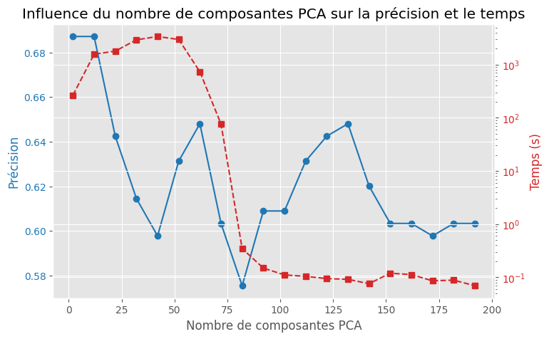
Figure 1
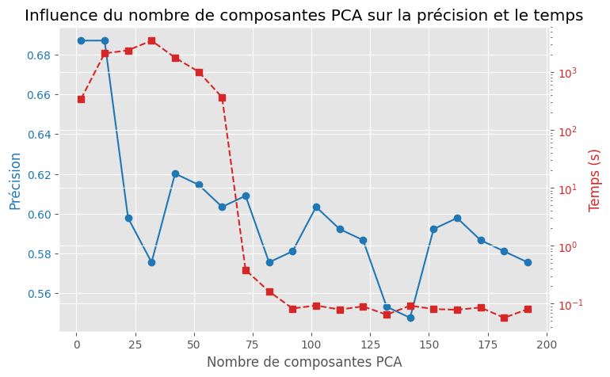
Figure 2
Sur les graphiques, l’axe X représente le nombre de composantes PCA, l’axe Y (gauche) indique la précision (courbe bleue) et l’axe Y (droite) montre le temps de calcul en secondes (courbe rouge, échelle logarithmique).
La fonction sklearn.decomposition.PCA(svd_solver='randomized') utilisée introduit une légère variabilité à chaque exécution en raison de l’initialisation aléatoire, ce qui peut rendre la qualité de la classification instable.
Le temps de traitement reste cependant globalement stable. Il atteint un pic entre \(32\) et \(52\) composantes, car pour un petit nombre de composantes, le PCA conserve le maximum de variance des caractéristiques originales. À ce stade, le SVM doit traiter encore une quantité significative d’informations utiles pour construire l’hyperplan, ce qui augmente la charge de calcul. Ensuite, lorsque le nombre de composantes augmente, le PCA répartit les caractéristiques significatives sur davantage de dimensions, réduisant la charge pour le SVM et entraînant une diminution du temps de traitement.
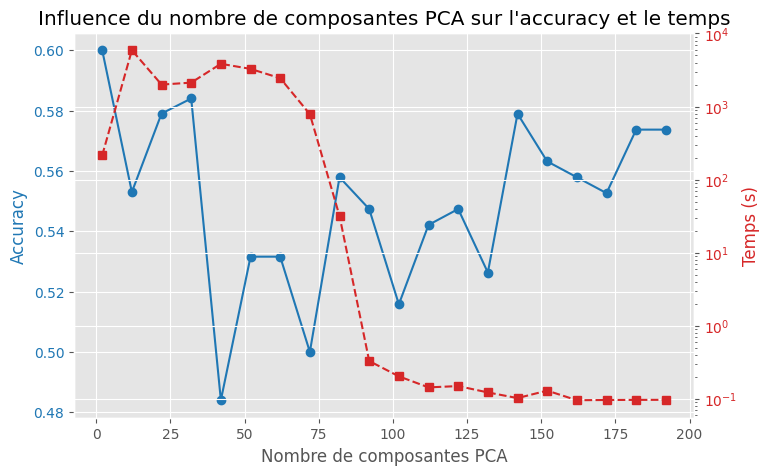
On peut également remarquer que cette tendance se maintient lorsqu’on entraîne le modèle sur un autre jeu de données, par exemple pour la comparaison de deux autres personnes : Tony Blair et Colin Powell, où l’on observe une dépendance similaire entre le nombre de composantes PCA et la précision ainsi que le temps de calcul.
Question 7 : biais dans le prétraitement
Dans le prétraitement initial, la normalisation était appliquée avant la séparation des échantillons d’entraînement et de test. La moyenne et l’écart-type ont donc été calculés sur l’ensemble du jeu de données, provoquant une fuite d’information de l’échantillon de test vers l’entraînement. Ce biais de prétraitement peut conduire à une estimation trop optimiste de la précision du modèle.
Par curiosité, nous avons voulu vérifier l’effet de cette correction, nous avons séparé les données en ensembles d’entraînement et de test avant normalisation. La moyenne et l’écart-type ont été calculés uniquement sur l’ensemble d’entraînement, puis utilisés pour normaliser l’échantillon de test.
Pour le rapport, nous vous présentons uniquement les résultats générés avec cette version corrigée, car l’exécution complète du code est longue. Nous avons juste changé la partie suivante et refait tourner pour les questions 4, 5 et 6.
lfw_people = fetch_lfw_people(min_faces_per_person=70, resize=0.4, color=True, funneled=False, slice_=None, download_if_missing=True)# data_home='.'# Introspecter les tableaux d'images pour trouver les formes (pour le traçage)images = lfw_people.imagesn_samples, h, w, n_colors = images.shape# L'étiquette à prédire est l'identifiant de la personnetarget_names = lfw_people.target_names.tolist()##################################################################### Choisissez une paire à classernames = ['Donald Rumsfeld', 'Colin Powell']idx0 = (lfw_people.target == target_names.index(names[0]))idx1 = (lfw_people.target == target_names.index(names[1]))images = np.r_[images[idx0], images[idx1]]n_samples = images.shape[0]y = np.r_[np.zeros(np.sum(idx0)), np.ones(np.sum(idx1))].astype(int)# Tracer un échantillon de donnéesplot_gallery(images, np.arange(12))plt.show()# Séparer d'abord les donnéesindices = np.random.permutation(X.shape[0])train_idx, test_idx = indices[:X.shape[0] //2], indices[X.shape[0] //2:]X_train, X_test = X[train_idx, :], X[test_idx, :]# Normalisation uniquement pour le trainmean = np.mean(X_train, axis=0)std = np.std(X_train, axis=0)X_train = (X_train - mean) / stdX_test = (X_test - mean) / std
Question 4
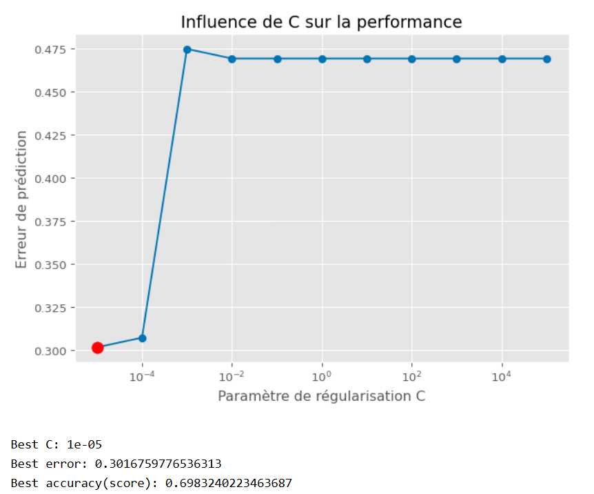
Après correction, la meilleure valeur du paramètre C a fortement diminué, passant de \(C = 10^{-3}\) à \(C = 10^{-5}\). Cette baisse reflète une évaluation plus réaliste de la généralisation du modèle et non une dégradation de ses performances.
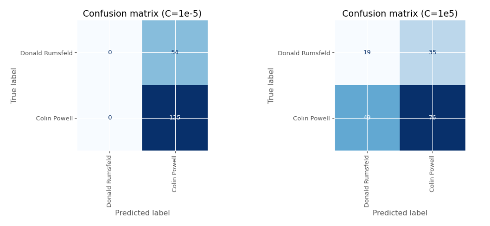
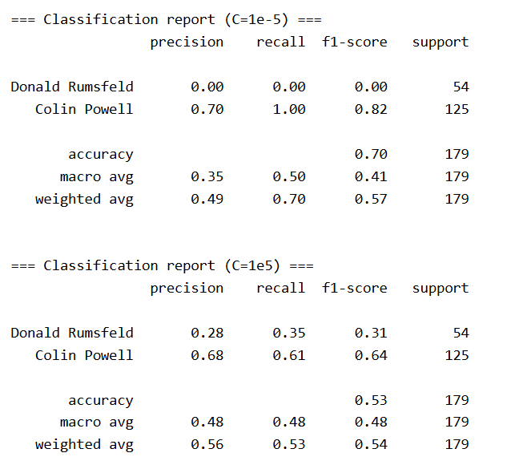
En comparant les nouveaux résultats avec les précédents, on constate une diminution significative de la précision du modèle.
Pour \(C = 10^{-5}\), la précision est passée de \(0.70\) à \(0.68\). Le modèle ne reconnaît toujours pas la classe Donald Rumsfeld, tandis que la précision et le rappel pour Colin Powell restent élevés.
Pour \(C = 10^{-}\), a baisse est plus marquée : la précision chute de \(0.88\) à \(0.50\). Le modèle distingue moins bien les deux classes : précision et rappel pour Donald Rumsfeld et Colin Powell sont fortement réduits.
Ces changements reflètent une évaluation plus réaliste de la généralisation, et non une dégradation intrinsèque du modèle.
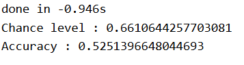
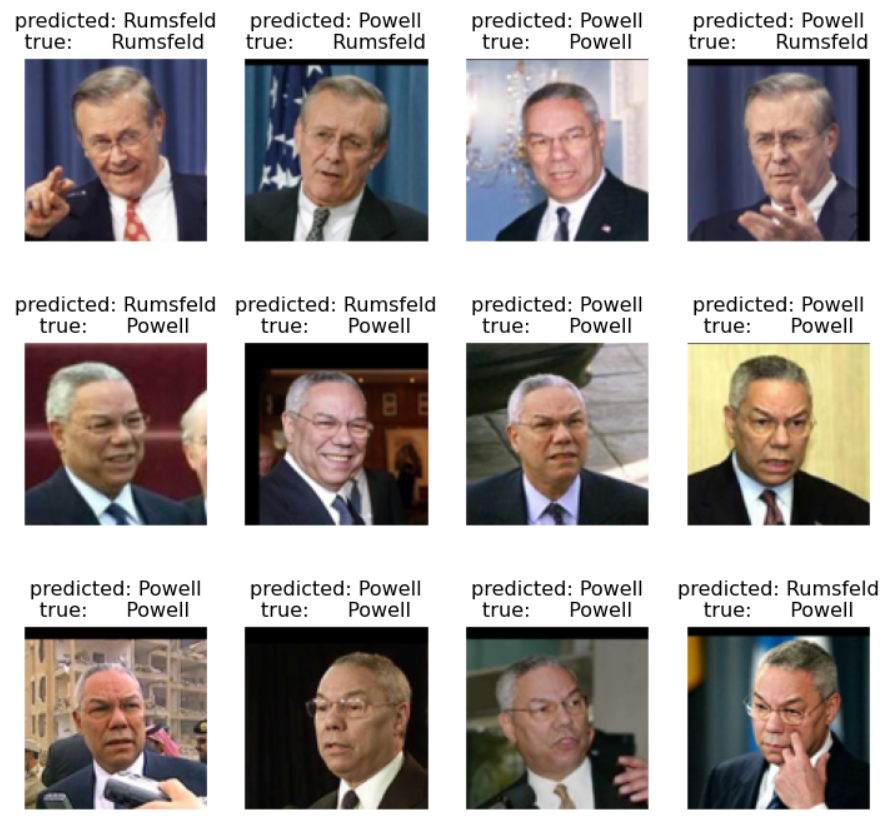
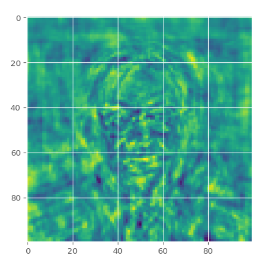
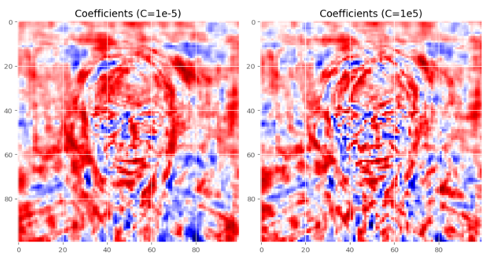
Nous pouvons remarquer que les deux images sont devenues plus fragmentées, ce qui est encore dû au changement dans le modèle entraîné.
Question 5
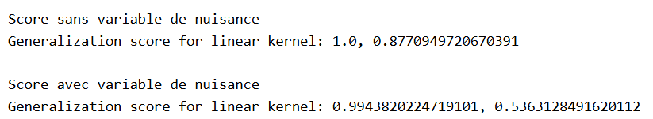
Sans variables de nuisance, le SVM atteint une précision d’environ \(0.89\). Après l’ajout de \(300\) variables aléatoires, la précision chute à \(0.53\), proche du niveau du hasard. Cette diminution s’explique par la correction de l’ordre des opérations : séparation des ensembles avant normalisation, empêchant le modèle d’utiliser des informations du test pour le scaling.
Question 6
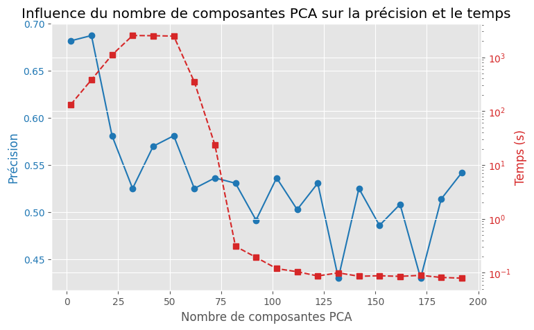
La correction du prétraitement réduit le temps total d’exécution, puisque la normalisation ne s’applique plus à l’ensemble complet des données. La tendance générale reste la même : pic de temps entre \(32\) et \(52\) composantes PCA, puis diminution progressive.
Les visualisations confirment que le modèle est légèrement moins fragmenté et que la performance mesurée est désormais réaliste.